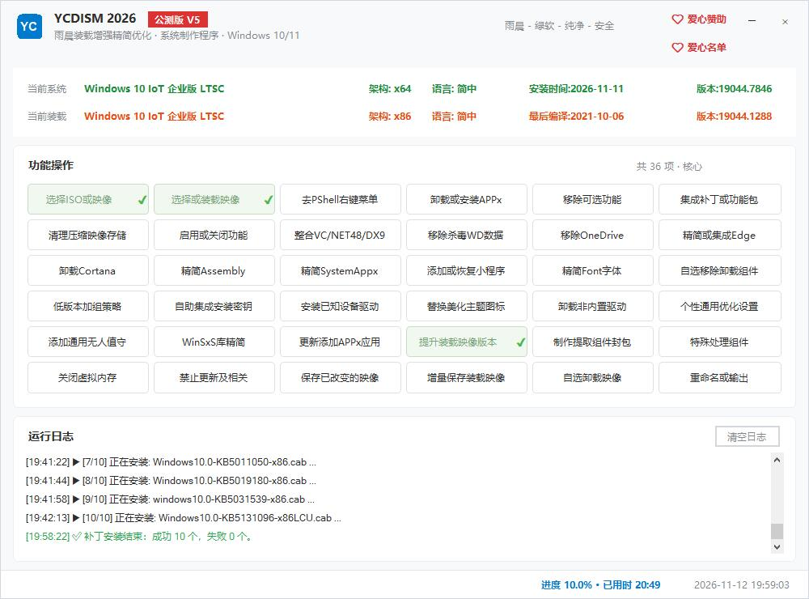

WINDOWS IMAGE STUDIO · 雨晨绿软
YCDISM是Windows 映像装载定制、增强、精简、优化、自定义设置一体化完全离线装载制作工具、基本实现在部署前完成目标系统的一切个性设置和定制功能。
正式版程序仍在不断增强，若感兴趣请持续关注，一有公测会第一时间在此提供直链

YCDISM 是雨晨 CMD 版程序功能与互动性质上的一次升华。依据20多年手动和程序化制作及海量测试沉淀之后的积累：程序智能判断，最后决定权仍交给用户决断。 所有能力都建立在与 ADK 技术的深度融合——按微软ADK官方文档规范与流程执行，再把经验叠在规范之内，通过横向、纵向、多层级、多维度整合对装载映像做定制、增强、精简、优化与自定义设置，从而轻轻松松完成定制工作。
早期的MS OS个人DIY的面非常有限，也没如今系统的普及面广。
核心操作基于 imagex.exe，第一次把原本零散的命令行串成一套可复用的流程，映像制作从"每次重新摸"变成"照着走"。
镜像格式与部署方式换代，工具链一边追系统，一边把处理链路补齐，为后来的完整形态打底。
装载、精简、优化、打包基本成形，CMD 版本已经能独立跑完一整套制作流程，这也是后来 GUI 版本对照的底本。
所有核心操作改由 ADK 的 dism.exe 完成，遵照官方规范与流程，把官方的横向、纵向与多层级能力结合起来，叠加多年手工经验，对装载映像做定制、增强、精简、优化与个性设置。
选好并行位置里的映像，点一下装载就能开始干活；日志会给出挂载路径，处理完再卸载回写。中途退出留下的挂载，下次启动会先清干净，不会带着脏数据继续。
系统应用管理、增强、自选卸载组件、特殊处理组件、Winsxs 精简、NetFx3 离线安装、LCU / FOD / PSF 补丁，按清单勾选执行；能选什么由目标系统的版本决定，界面上不会出现用不了的选项。
通用优化单项选择逐条勾选，右键菜单、文件关联、任务栏图标居中与透明按需开启；这些设置只对目标机生效，不回头改动你正在用的这台电脑。
组件与应用
精简与清理
补丁、运行库与驱动
优化与个性化
其它
| 程序 | 用途 | 架构 | 依赖 |
|---|---|---|---|
| YCTB.exe | 任务栏程序图标居中 + 任务栏透明，托盘右键四项开关 | x86 | 零依赖原生 |
| YCCTX.exe | 右键菜单与上下文项管理 | x86 | .NET |
| YCDISMACx86/x64.exe | 映像内自动化动作执行 | x86 / x64 | 随宿主位数取 |
| YCPack.exe | 重命名/输出纯净映像、打包 ESD/ISO 与 ESD 加解密（内置实现） | AnyCPU | 不随包常驻；内嵌于程序，用到时才释放到 TOOL，仅限 YCDISM.exe 调用 |
| YCAC.exe | 确保用户有ADK权限 | x86/x64 |
版权声明随包工具中如含第三方开源程序，均来自网络公开渠道，版权归各原作者所有，本项目仅作集成与分发，不作售卖。WIM／ESD 读写、PSF 解码、CAB 与压缩包处理等已改为程序内置实现或系统自带工具，不再随包分发对应的第三方程序。若权利人认为收录不妥、希望下架，可通过页脚 QQ 或仓库 Issue 联系，核实后第一时间移除。
以包族的 mum 为起点，顺着 dependency/dependentAssembly 与 package/update/package 两条引用逐层并入组件清单、子包与载荷；母包里查不到清单身份的引用按组件处理，n\、f\、r 三类备份副本一并收进，宁多不少。导出的 CAB 结构与官方特征包一致，可直接交 DISM 安装。
WIM 基线先展开，再按包内 cix.xml 打 PSF 差量，最后封装成 ESD；PSF 解码改用内置 msdelta 直连，不再调用外置工具；映像是 x86 还是 x64 由补丁名第三段判定，不符合直接提示。
安装目录按宿主位数与系统盘自动定位，版本号取真实文件版本，捕获成 Edge.wim，已存在时询问覆盖、追加还是取消；捕获项不要求先装载映像。
Microsoft-Windows-EnterpriseSEdition 与它的 -Wrapper 同时存在时，才从组件清单里剔除，避免把不相干的中性包一起排掉。
一个托盘小程序同时管居中与透明，右键四项开关随手切；重启资源管理器、插拔显示器后会自动重新对齐，静息占用维持在 3–4 MB，Win7 SP1 到 Win10 19045 都能用。
将部分添加的菜单进行收缩层叠，不再使用全独立菜单按钮。
原来按 1600×900 这类固定组合做占位，目前使用独立YCTB来完成智能适应各种分辨率居中，完全C++不依赖额外运行库、轻快运行低占用。
在用户已有数据发生灾难时，只要程序不被破坏依然随时可用，不会因为缺失工具而导致定制无法进行。
| 功能 | 适用范围 | 说明 |
|---|---|---|
| 主程序与映像处理 | Win10 / Win11 | 需 .NET Framework 4.8；32 位系统同样可运行 |
| 任务栏图标居中 | build ≤ 19045 | 仅对Win7到Win10-19045以下系统部署 |
| 任务栏透明 | Win10 / Win11 | 同上 |
| YCDISM核心所需权限和环境 | Win7 及以上 | 能否完全操作取决于用户当前环境和权限要绝对与微软官方文档ADK一致，以免操作会失败，这不是工具所需特权，特此说明。 |
YCDISM 程序编写、数据整合一直是雨晨独立花费巨量时间、精力及金钱来完成的，毕竟雨晨也是人要生活、除了免费开放的外肯定还是要热心人士、志趣相同以及更多同道者精神、经济、物质上的支持方能走向更远、更开放的未来。
微信扫码即可，金额随意，完全自愿，不影响任何功能与更新。爱心名单会随时补充。
以上名单按昵称排列不会先后和赞助额度。感谢以上朋友的大力支持。
绝大多数映像操作需要。程序启动会申请提权，成功后日志里只保留一个权限状态标记；权限不足时会有明确提示，并说明相关操作可能失败。
映像相关操作都在离线挂载的映像里进行，不改本机。只有明确属于本机的设置项（例如任务栏外观、右键菜单）才会写本机注册表，并保留恢复路径。
打包需要知道目标盘的分区与装载分区位置，程序在打包前会搜索可用分区；找不到时不会自行猜测，会提示先装载映像再打包。